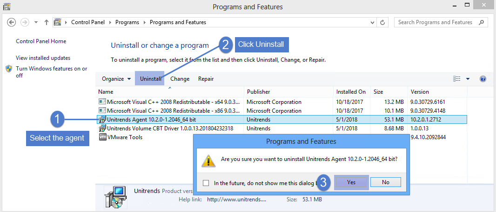
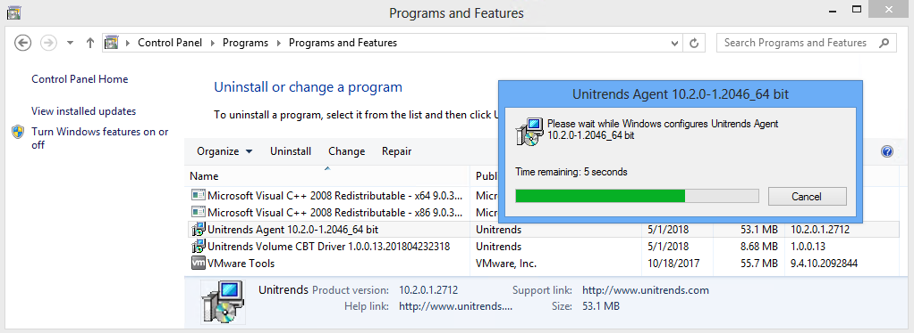
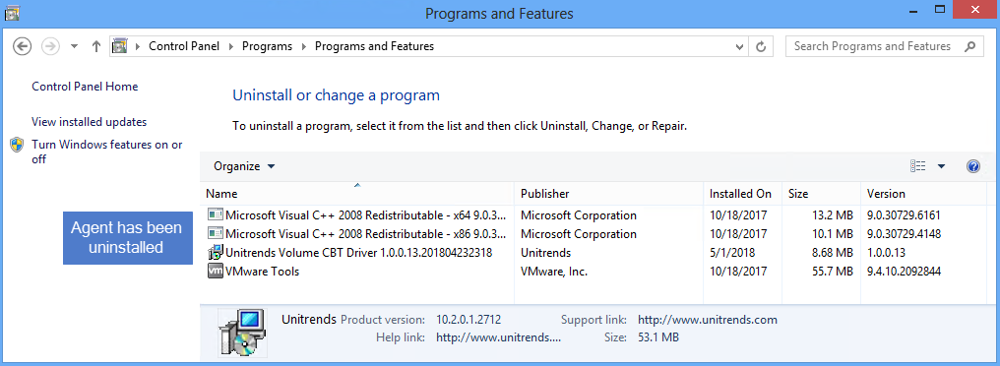

Windows 에이전트 제거#
Unitrends 에이전트를 안전하게 제거하려면 아래 단계를 따르세요:
※ 중요사항
명령줄(Command Line) 설치를 사용한 경우:
에이전트를 명령줄 방식으로 설치한 경우, 동일한 방식으로 에이전트를 제거해야 합니다.
1. Windows 에이전트 제거 단계#
(1) 프로그램 추가/제거로 이동:
Windows의 프로그램 추가/제거 인터페이스를 엽니다.
목록에서 Unitrends Agent를 선택합니다.
(2) 제거 실행:
Uninstall(제거) 버튼을 클릭합니다.
확인 창이 뜨면 Yes(예)를 클릭하여 제거를 확인합니다.   
(3) Volume CBT 드라이버 제거(필요 시):
필요에 따라 위와 동일한 정차를 반복하여 Unitrends Volume CBT Driver도 제거합니다.
2. 결과#
이 단계를 완료하면 Unitrends 에이전트가 안전하게 제거됩니다.
명령줄로 설치한 경우에는 명령줄 방식을 사용해야 한다는 점을 기억하세요.
On this page